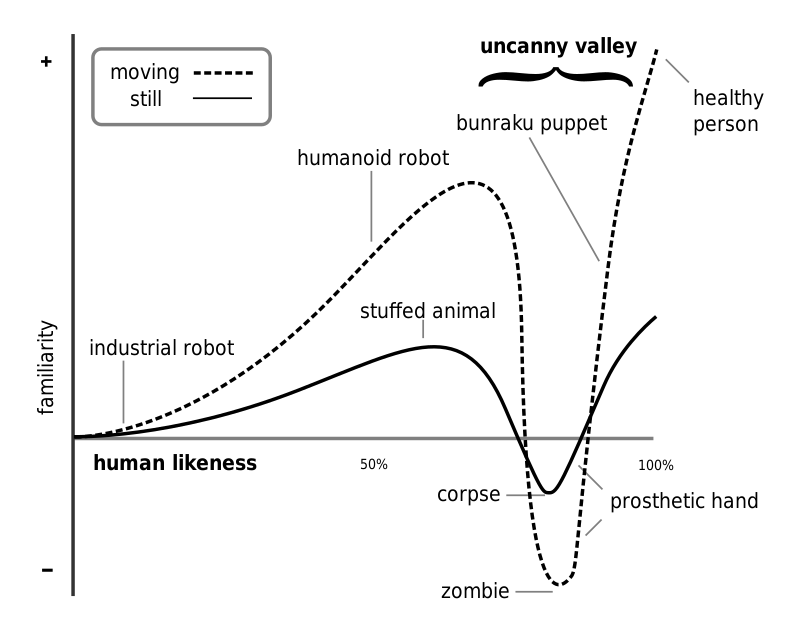
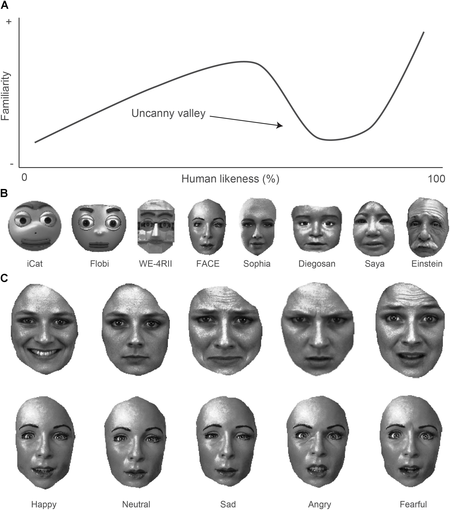

The Uncanny Valley
An Analysis of the Eery Phenomenon in Video Games and Digital Media


The uncanny valley, a concept first introduced by Masahiro Mori in 1970, has become increasingly relevant in modern times as technology continues to advance. The concept describes the phenomenon where an artificial entity that closely resembles a human, but falls just short of perfection, elicits an eery or unsettling feeling in humans. This feeling occurs when an artificial entity exhibits a close resemblance to a human, but with some imperfections or abnormalities.
The term "uncanny valley" was coined to describe the dip in the emotional response that occurs as an artificial entity becomes more human-like. Mori described it as "a region of negative emotional response" where the artificial entity's resemblance to a human is close enough to be recognizable, but different enough to cause a sense of unease. This dip is called a "valley" because the emotional response drops off sharply before eventually rising again when the artificial entity becomes indistinguishable from a human. Mori's original description of the uncanny valley was based on observations of humanoid robots, but it has since found numerous modern applications in video games and other forms of digital media.
In video games, developers strive to create increasingly realistic human characters, but often fall into the uncanny valley, leading to players experiencing an unsettling feeling. Take the character of Lara Croft in the early Tomb Raider games. As technology improved, the developers attempted to make her more realistic, but the result was a character that was too realistic but not quite human, creating a sense of discomfort in players. In contrast, the cartoonish character designs of games like Super Mario Bros. and The Legend of Zelda avoid the Uncanny Valley effect by being obviously non-human. Another example of the Uncanny Valley effect in popular culture is the CGI used to create the character of Grand Moff Tarkin in the 2016 film Rogue One: A Star Wars Story. While the technology allowed for a realistic representation of the character, the result was unsettling for many viewers due to the slight imperfections in the animation. Similarly, Lilmiquela, an Instagram influencer, is a prime example. Despite being entirely artificial, Lilmiquela's creators have designed her to look like a real human, complete with freckles, blemishes, and a sense of style. While her fans may be intrigued by her uniqueness, some people find her appearance to be unsettling and creepy.
Modern readings of the uncanny valley have sought to expand upon Mori's original concept and apply it to new technologies. For example, some researchers have suggested that the uncanny valley effect may be more pronounced in virtual reality experiences because they provide a more immersive environment that is more difficult to distinguish from reality. Others have suggested that the uncanny valley may be more pronounced in cultures where the concept of human-like robots is less common, as they are more likely to elicit an emotional response due to their novelty.
The uncanny valley remains a relevant and thought-provoking concept in modern times as technology continues to push the boundaries of what is possible. Its relevance in video games and digital media serves as a reminder of the importance of balancing realism with aesthetic appeal, and the need to carefully consider the emotional impact of new technologies. As Mori himself said, "The uncanny valley is a warning sign to engineers and designers, telling them that they have come too close to the border between the human and the non-human."
An Analysis of the Eery Phenomenon in Video Games and Digital Media
The uncanny valley, a concept first introduced by Masahiro Mori in 1970, has become increasingly relevant in modern times as technology continues to advance. The concept describes the phenomenon where an artificial entity that closely resembles a human, but falls just short of perfection, elicits an eery or unsettling feeling in humans. This feeling occurs when an artificial entity exhibits a close resemblance to a human, but with some imperfections or abnormalities. The term "uncanny valley" was coined to describe the dip in the emotional response that occurs as an artificial entity becomes more human-like. Mori described it as "a region of negative emotional response" where the artificial entity's resemblance to a human is close enough to be recognizable, but different enough to cause a sense of unease. This dip is called a "valley" because the emotional response drops off sharply before eventually rising again when the artificial entity becomes indistinguishable from a human. Mori's original description of the uncanny valley was based on observations of humanoid robots, but it has since found numerous modern applications in video games and other forms of digital media.
In video games, developers strive to create increasingly realistic human characters, but often fall into the uncanny valley, leading to players experiencing an unsettling feeling. Take the character of Lara Croft in the early Tomb Raider games. As technology improved, the developers attempted to make her more realistic, but the result was a character that was too realistic but not quite human, creating a sense of discomfort in players. In contrast, the cartoonish character designs of games like Super Mario Bros. and The Legend of Zelda avoid the Uncanny Valley effect by being obviously non-human. Another example of the Uncanny Valley effect in popular culture is the CGI used to create the character of Grand Moff Tarkin in the 2016 film Rogue One: A Star Wars Story. While the technology allowed for a realistic representation of the character, the result was unsettling for many viewers due to the slight imperfections in the animation. Similarly, Lilmiquela, an Instagram influencer, is a prime example. Despite being entirely artificial, Lilmiquela's creators have designed her to look like a real human, complete with freckles, blemishes, and a sense of style. While her fans may be intrigued by her uniqueness, some people find her appearance to be unsettling and creepy.
Modern readings of the uncanny valley have sought to expand upon Mori's original concept and apply it to new technologies. For example, some researchers have suggested that the uncanny valley effect may be more pronounced in virtual reality experiences because they provide a more immersive environment that is more difficult to distinguish from reality. Others have suggested that the uncanny valley may be more pronounced in cultures where the concept of human-like robots is less common, as they are more likely to elicit an emotional response due to their novelty. The uncanny valley remains a relevant and thought-provoking concept in modern times as technology continues to push the boundaries of what is possible. Its relevance in video games and digital media serves as a reminder of the importance of balancing realism with aesthetic appeal, and the need to carefully consider the emotional impact of new technologies. As Mori himself said, "The uncanny valley is a warning sign to engineers and designers, telling them that they have come too close to the border between the human and the non-human."